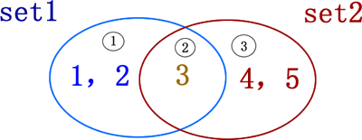
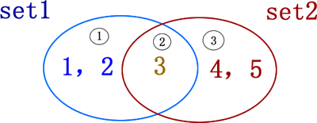

首页 > Python > 列表、元组、字典和集合
Python set集合基本操作（添加、删除、交集、并集、差集）
Python set 集合最常用的操作是向集合中添加、删除元素，以及集合之间做交集、并集、差集等运算，本节将一一讲解这些操作的具体实现。
需要注意的是，使用 add() 方法添加的元素，只能是数字、字符串、元组或者布尔类型（True 和 False）值，不能添加列表、字典、集合这类可变的数据，否则 Python 解释器会报 TypeError 错误。例如：
如果我们不想在删除失败时令解释器提示 KeyError 错误，还可以使用 discard() 方法，此方法和 remove() 方法的用法完全相同，唯一的区别就是，当删除集合中元素失败时，此方法不会抛出任何错误。
例如：

图 1 集合示意图
图 1 中，有 2 个集合，分别为 set1={1,2,3} 和 set2={3,4,5}，它们既有相同的元素，也有不同的元素。以这两个集合为例，分别做不同运算的结果如表 1 所示。
向 set 集合中添加元素
set 集合中添加元素，可以使用 set 类型提供的 add() 方法实现，该方法的语法格式为：setname.add(element)
其中，setname 表示要添加元素的集合，element 表示要添加的元素内容。需要注意的是，使用 add() 方法添加的元素，只能是数字、字符串、元组或者布尔类型（True 和 False）值，不能添加列表、字典、集合这类可变的数据，否则 Python 解释器会报 TypeError 错误。例如：
a = {1,2,3}
a.add((1,2))
print(a)
a.add([1,2])
print(a)
运行结果为：
{(1, 2), 1, 2, 3}
Traceback (most recent call last):
File "C:\Users\mengma\Desktop\1.py", line 4, in <module>
a.add([1,2])
TypeError: unhashable type: 'list'
从set集合中删除元素
删除现有 set 集合中的指定元素，可以使用 remove() 方法，该方法的语法格式如下：setname.remove(element)
使用此方法删除集合中元素，需要注意的是，如果被删除元素本就不包含在集合中，则此方法会抛出 KeyError 错误，例如：
a = {1,2,3}
a.remove(1)
print(a)
a.remove(1)
print(a)
运行结果为：
{2, 3}
Traceback (most recent call last):
File "C:\Users\mengma\Desktop\1.py", line 4, in <module>
a.remove(1)
KeyError: 1
如果我们不想在删除失败时令解释器提示 KeyError 错误，还可以使用 discard() 方法，此方法和 remove() 方法的用法完全相同，唯一的区别就是，当删除集合中元素失败时，此方法不会抛出任何错误。
例如：
a = {1,2,3}
a.remove(1)
print(a)
a.discard(1)
print(a)
运行结果为：
{2, 3}
{2, 3}
Python set集合做交集、并集、差集运算
集合最常做的操作就是进行交集、并集、差集以及对称差集运算，首先有必要给大家普及一下各个运算的含义。
图 1 集合示意图
图 1 中，有 2 个集合，分别为 set1={1,2,3} 和 set2={3,4,5}，它们既有相同的元素，也有不同的元素。以这两个集合为例，分别做不同运算的结果如表 1 所示。
| 运算操作 | Python运算符 | 含义 | 例子 |
|---|---|---|---|
| 交集 | & | 取两集合公共的元素 |
>>> set1 & set2 {3} |
| 并集 | | | 取两集合全部的元素 |
>>> set1 | set2 {1,2,3,4,5} |
| 差集 | - | 取一个集合中另一集合没有的元素 |
>>> set1 - set2 {1,2} >>> set2 - set1 {4,5} |
| 对称差集 | ^ | 取集合 A 和 B 中不属于 A&B 的元素 |
>>> set1 ^ set2 {1,2,4,5} |
关注公众号「站长严长生」，在手机上阅读所有教程，随时随地都能学习。内含一款搜索神器，免费下载全网书籍和视频。

微信扫码关注公众号